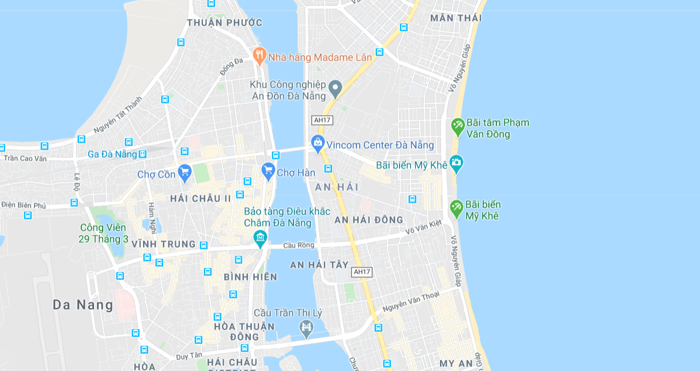
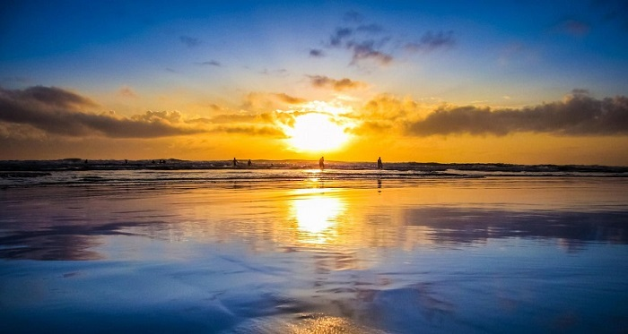
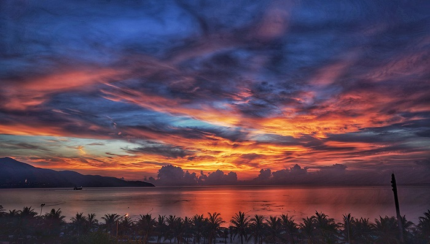
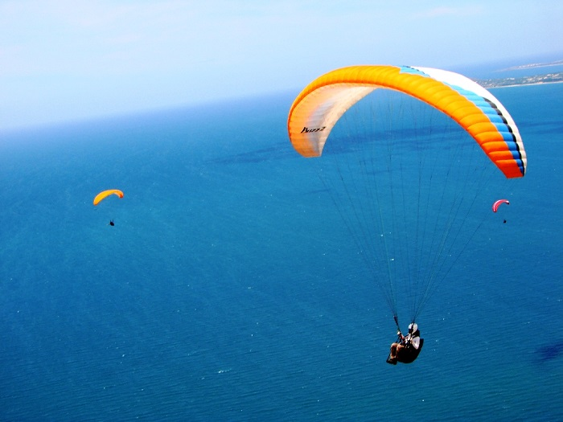

Là 1 trong những điểm đến không thể bỏ qua khi đến Đà Nẵng, bãi biển Mỹ Khê từng được tạp chí Forbes nhận định là 1 trong 6 bãi biển đẹp nhất hành tinh. Bạn đã biết gì về biển Mỹ Khê chưa? Bạn sẽ khám phá Mỹ Khê bằng kinh nghiệm du lịch những vùng biển khác? Bạn biết hãng taxi giá rẻ ở Đà Nẵng chưa? Để chuyến du lịch trọn vẹn, hãy cùng chúng tôi tìm hiểu về Mỹ Khê nhé!
Tọa lạc ở phường Phước Mỹ, quận Sơn Trà, bãi biển Mỹ Khê là một bờ biển kéo dài từ chân bán đảo Sơn Trà cho đến Non Nước - Ngũ Hành Sơn. Bãi biễn Mỹ Khê được đánh giá là một trong những bãi biển châu Á được yêu thích nhất thế giới với các bãi tắm đẹp, không gian thoáng đãng và có nhiều khu nghỉ dưỡng, biệt thự cao cấp xung quanh. Ngoài ra, tại đây còn có vô số hoạt động giải trí hấp dẫn khác như tắm biển, lướt ván, dù lượn, câu cá, lặn ngắm san hô, đi du thuyền,...
Biển Mỹ Khê chỉ cách trung tâm Đà Nẵng khoảng 3km nên du khách chỉ cần đi bằng máy bay hoặc tàu hỏa tới Đà Nẵng rồi từ ga hoặc sân bay Đà Nẵng di chuyển đến trung tâm thành phố. Sau đó, du khách tiếp tục đi taxi qua cầu sông Hàn và đi thẳng theo đường Phạm Văn Đồng khoảng 1,5km sẽ đến được biển Mỹ Khê. Ngoài ra từ sân bay du khách có thể đi theo đường Nguyễn Văn Linh đến cầu Rồng, tiếp tục đi theo đường Võ Văn Kiệt rồi qua đường Võ Nguyên Giáp và rẽ trái vào Trường Sa, đi tiếp khoảng 70m nữa là đến biển Mỹ Khê.
Nếu ai đã từng đến Đà Nẵng đều muốn một lần được tấm biến Mỹ Khê với làn nước biển trong xanh, bờ cát trắng mịn,
sóng biển hiền hòa và những hàng dừa thơ mộng bao quanh, Mỹ Khê sở hữu đường bờ biển dài hơn 900m với 3 bãi tắm
để phục vụ du khách.
Đầu tiên là bãi tắm nằm trong trung tâm công viên Phạm Văn Đồng khá nhỏ và chỉ phục vụ cho các hoạt động
công viên.
Tiếp theo rẽ phải 50m là đến bãi T20-T18 với biển sâu, bờ cát trắng và thường có sóng lớn, khá lý tưởng
dành cho những bạn trẻ ưa cảm giác mạnh.
Cuối cùng, rẽ trái khoảng 300m là bãi tắm 1-2-3 được đầu tư đầy đủ các dịch vụ như: địa điểm gửi xe, gửi đồ, tắm nước ngọt, dịch vụ ăn uống giải khát,
cứu hộ bãi biển và vệ sinh môi trường. Bãi tắm có bờ cát rộng và dài, bờ biển thoai thoải lại ít sóng.
Đây cũng là điểm tắm an toàn phù hợp với trẻ em và người lớn tuổi.
Bình minh trên biển Mỹ Khê được đánh giá là một trong những thời khắc vàng của Đà Nẵng. Chính vì thế nếu bạn là một người yêu thích sự lãng mạn, đến Mỹ Khê đừng bỏ lỡ cơ hội đi dạo trên bãi biển và chiêm ngưỡng bức tranh Mỹ Khê thơ mộng với những ánh mặt trời đầu tiên của ngày mới nhé!
Chiều tà là khoảnh khắc hoàng hôn với ráng chiều ửng đỏ một góc trời, từng con gió thổi mát lạnh cùng tiếng sóng vỗ rì rào; lúc này biển Mỹ Khê lại mang một màu sắc trầm mặc và lãng mạn hơn bao giờ hết.
Tại bãi biển Mỹ Khê, du khách sẽ có cơ hội tham gia vào một trò chơi mạo hiểm, thú vị đó là dù lượn ngắm cảnh biển Mỹ Khê và toàn cảnh thành phố Đà Nẵng từ trên cao. Ngoài dù lượn, du khách còn có thể tham gia trải nghiệm lướt ván, nhảy dù, chơi bóng chuyền trên bãi biển, dạo bộ hoặc chạy bộ trên bờ biển.

Tại Mỹ Khê, du khách không thể bỏ qua việc thưởng thức các loại hải sản tươi ngon, đa dạng từ tôm, cua, ốc, ghẹ cho
đến mực, cá, hải sâm,... mà giá cả lại rẻ hơn so với những thành phố khác. Các món hải sản ở đây có rất nhiều và
hầu như không thiếu món gì như tôm nướng mòi, tôm xóc tỏi, cua rang me, bào ngư nướng, lẩu hải sản,...
Đặc biệt, những quán ăn, nhà hàng tại biển Mỹ Khê đều có tầm nhìn tuyệt đẹp hướng ra biển, nên du khách có thể vừa
ăn vừa ngắm cảnh và tận hưởng từng cơn gió mát rượi.
Bên cạnh thưởng thức hải sản, du khách có thể đến chợ cá nằm liền kề nối vào bãi biển để mua hải sản tươi như tôm, cua,...
về làm quà cho bạn bè và người thân.